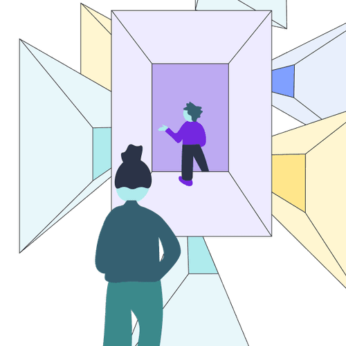

Many of Lufthansa Technik’s 4,500 employees were stuck in endless meetings. With 9 Spaces, they began building a more effective meeting culture.
Explore six non-awkward formats, methodsand exercises that help bring teams closer together.
A guide for leaders to resolve team friction before it turns into conflict.
Turn mistakes into genuine learning opportunities – for you and your team.
Design a company-wide meeting that provides direction and brings the most relevant information together in one place.
Hand off tasks to the right person in a structured, considered way.
A simple framework for offering feedback – positive or negative – without the awkwardness.
Ensure a smooth handover and show genuine appreciation with a well-structured exit interview.

Identify your team's most critical competencies and future-proof your success.
Uncover time-wasting tasks in your team's daily routine and clear them out.
Focused work is a lonely affair for remote teams. So we’ve created a framework for working alone, together.
Create a simple system for capturing & sharing expertise.